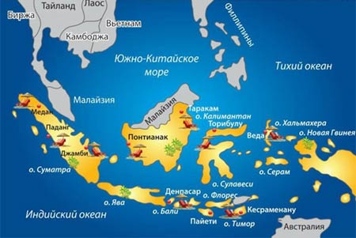
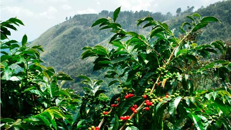
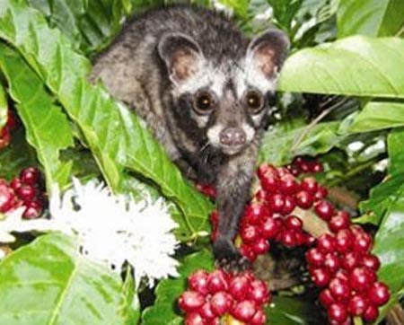

Индонезийский кофе
Наиболее известные производители кофе – это Бразилия, Колумбия, Гватемала. Но мир тем и прекрасен, что он разнообразен. Чудесное островное государство Индонезия, состоящее из более чем 18 000 больших и малых островов тоже выращивает кофе. Пусть не в таких количествах как латиноамериканские страны, но качество и своеобразие индонезийского кофе, несомненно, заслуживает внимания.

В силу своего географического положения и наличия горного ландшафта Индонезия имеет благоприятные климатические условия для культивирования кофе. Богатые минералами почвы также способствуют полноценному насыщению зерен. Эти факты оценили голландские колонисты еще в конце 17 века. Они завезли из Индии первые кофейные деревья на остров Ява и организовали там плантации. Опыт оказался удачным и спустя несколько десятилетий новые кофейные плантации появились на островах Калимантан, Сулавеси, Суматра, Бали, Флорес, Тимор, Папуа-Новая Гвинея.
Индустрия процветала. В Европу кофе в мешках отправлялся целыми кораблями. К сожалению, в конце XIX века плантации подверглись массовой эпидемии кофейного грибка. Почти все деревья погибли. Производство кофе на всем аргипелаге пришло в упадок. И лишь к 1947 производство кофе в Индонезии было полностью восстановлено. Саженцы робусты, наиболее устойчивые к заболеваниям, были завезены из Африки.
В настоящее время около 90% производимого кофе в Индонезии – это робуста, а на оставшуюся долю приходятся сорт арабика, редкий сорт либерика и такие гибриды как типика и катимор. Причем робуста в Индонезии весьма насыщена, имеет несколько терпкий вкус и сильный аромат. Поэтому многие обжарщики кофе в мире используют индонезийскую робусту в качестве добавки к купажам.
Арабика возделывается в основном на островах Ява, Суматра и Сулавеси. Сбор и обработка кофейных зерен производится вручную небольшими кооперативами, имеющими государственные лицензии. Знаменитый сорт Ява Джампит обрабатывается сухим способом путем просушки на открытом солнце. Затем снимается кожура боба, а зерна сортируются. Напиток из этого сорта очень насыщенный, имеет приятный земляной привкус и шоколадное послевкусие. Сорт Суматра Манделинг многие знатоки кофе называют одним из самых прекрасных в мире из-за его высокой насыщенности, отсутствия кислинки, неповторимого шоколадного вкуса, долгого и приятного послевкусия. На острове Сулавеси в ограниченной области выращивают уникальный сорт Торайа. Вкус ароматного напитка мягкий, сладковатый с доминированием фруктовых ноток. Приятное послевкусие со слабой кислинкой.

И конечно надо отметить, что Индонезия является родиной всемирно известного, самого дорогого и изысканного кофе Лювак. В процессе производства этого своеобразного кофе принимают участие небольшие зверки из отряда виверровых, которых в Индонезии называют люваками. Эти животные, похожие на хорька, обитают на кофейных плантациях и с удовольствием поедают наиболее свежие кофейные бобы. Но в процессе пищеварения, переваривается только кожура бобов, а зерна остаются целыми и подвергаются естественной ферментации желудочным соком животных. Такие зерна тщательно промывают, просушивают и лишь потом отправляют в обжарку. Зерна приобретают новые качества, не теряя первоначальных свойств. Кофе лювак на вкус мягкий, без кислинки, имеет тонкий аромат, насыщенную консистенцию и долгое приятное послевкусие. Кофейные гурманы со всего мира высоко оценивают достоинство кофе лювак.

Сейчас Индонезия ежегодно производит около 600 тысяч тонн кофе. Основные импортеры индонезийского кофе – США, Япония, Германия. Растет спрос в таких странах как Россия, Китай, Франция, Южная Корея. Неоспоримые достоинства индонезийского кофе с сочетанием умеренной себестоимости дают ему существенное преимущество, чтобы занять лидирующие позиции на Российском рынке в ближайшем будущем.
Компания Dalatcoffee уже предприняла шаги, которые позволяют всем российским кофеманам отведать вкус великолепного экзотического кофе из Индонезии. Для того, чтобы вкус кофе максимально сохранился, товар поставляется в зернах в свежеобжаренном виде в фольгизированных пакетах с клапаном. Тонкие ценители кофе найдут также кофе лювак и его аналоги. Продукция имеет фирменную дизайнерскую упаковку, что хорошо может представить товар в виде подарка. Приятных новых ощущений от процесса употребления кофе. Наслаждайтесь экзотическим вкусом!